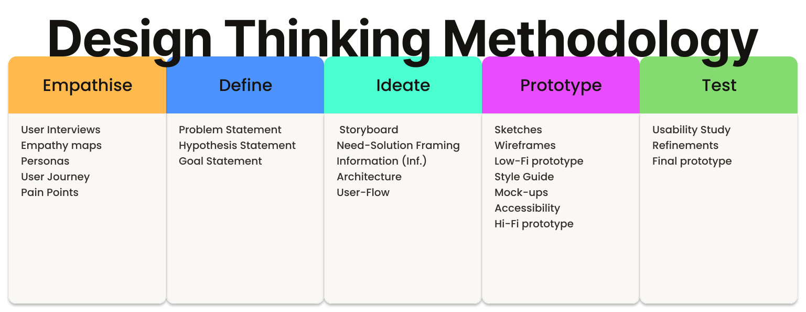

Box Hill Art School App

Case Study | Kelly Santos | 2023
This case study details the step-by-step development process of the Box Hill Art School App, using the Design Thinking methodology, which resulted in a mobile solution to provide a more user-friendly experience for students and carers.

Table of Contents
keyboard_arrow_down closeProject overview
About the project
This project aims to develop a mobile app to enhance the user experience of Box Hill Art School, transforming how students engage with this vibrant hub for art education.
Key objectives
Develop an app that allows users to browse, purchase and enrol in courses, providing a seamless end-to-end experience.
Project Details
Scope of Work
- Apply a Human-Centred Design (HCD) approach, utilising the Design Thinking methodology to drive the project from discovery through to execution.
- Conduct user research and analysis to understand user needs, pain points, behaviours, and refine the problem statement.
- Design user flows, wireframes, prototypes, and animations.
- Test the app to ensure usability and iterate the designs based on feedback.
Methodology
Design Thinking is a human-centred methodology that uses a five-stage process, Empathise, Define, Ideate, Prototype, and Test, to understand users and solve problems, resulting in solutions that are desirable, feasible, and viable.
This project employed the Design Thinking methodology, guiding the process through user research, ideation, prototyping, and testing to produce the final Box Hill Art School App design.


Empathise
Empathise is the first phase of the Design Thinking process; it focuses on employing a variety of tools to uncover and understand the feelings, thoughts, and experiences of users, gathering data and insights to guide the design solutions.
To build a comprehensive understanding of the user experience, five key methods were utilised to gather and structure data:
- User interviews
- Empathy maps
- Personas
- User journeys
- Pain points
User Interviews
User interviews is a method used to gather qualitative data and insights; it involves conversations with participants to understand their thoughts, feelings, and experiences.
Semi-structured, face-to-face interviews were conducted to identify users' needs, motivations, and pain points regarding the Box Hill Art School website.
User Interviews Details

Empathy Maps
An empathy map is a method that visually explores a user’s sayings, thoughts, actions, and feelings to build a shared understanding of a specific group of people, highlighting their unique needs and pain points.
To synthesise the findings from the initial research, an Empathy Map was developed to categorise the qualitative data gathered from seven key participants during the Box Hill Art School user interviews.
![A table displaying information about
seven users (Lisa, Eliane, Ed, Mathiew, Charles, Marissa, and Jordan)
based on four categories: Says, Does, Think, and Feels. Each row represents
a users experience with the Art Class Payment System and app. For example,
Lisa Says she wants a reward program, Does make frequent payments, Thinks about
using her ideas in courses, and Feels satisfied but notes a lack of rewards. T
he table details the other users frustrations with credit card information,
repetitive address entry, password issues, app appearance, and concerns about payment
control and attendance tracking. The table provides a structured overview of user needs,
behaviors, thoughts, and emotions for design decisions.](Assets/Portfolio/BHAS/03 - Empaphy maps.svg)
Personas
A persona is a method used to create a fictional character that represents a group with common characteristics, such as their demographics, behaviours, motivations, and goals, clearly informing the project's target users.
Three personas, Analla, Ned, and Paul, emerged from the studies. They represent the diverse user base of the Box Hill Art School app, each with unique needs and preferences.
Ned Persona (Retiree)

Ned prioritizes taking care of his wife, with his frustration stemming from dealing with technology.
Analla Persona (manager and mother)

Analla aims to socialise, likely frustrated by the difficulties of making friends in her new country.
Paul Persona (engineer and father) | Highlight
The Paul persona contributed with key insights, mainly because this persona brings together many of the common challenges faced by users.

Paul is a busy worker and solo father seeking a balanced life, who struggles to manage his daily routine, raise his daughters, be a present and caring parent, maintain a successful career, and still find time for self-care.
User Journeys
A user journey is a method that visually maps the path a user takes to achieve a specific goal, highlighting their actions, thoughts, feelings, and pain points at each stage to identify opportunities for improvement.
Paul’s user journey focuses on tracking and exploring his experiences and outcomes when trying to enrol his daughters in art classes at Box Hill Art School.

Paul's journey map (Tasks/Feelings):
- Searching (appreciative)
- Accessing the website (neutral)
- Choosing a class (intrigued, then frustrated by contact limitations)
- Enrolling (confused, then frustrated by needing to call)
- Paying (easy, secure)
- Confirmation (relieved)
The outcome of the journey was found to be time-consuming and stressful, mainly related to the tasks of choosing a class and enrolling , emphasising the need for a more efficient and user-friendly solution.
Pain Points
Pain points is a method used to identify and declare specific problems or frustrations that target users experience while interacting with a product, service, or system, providing critical focus for the design process.
User feedback and data analysis identified the following three most important pain points:
Paul, a busy engineer, finds the enrolment process to be time-consuming and stressful. He needs a simple way to enrol, pay, and manage his daughters' schedules at Box Hill Art School.

Analla, a manager, seeks to connect with classmates and teachers; she feels frustrated because the current website lacks chat features.

Ned, a retiree, struggles to sign-in to the school's page due to forgetting his password. He needs an easier sign-in process.
The Empathise phase concludes with a definitive list of three pain points: Tiring Enrolment, Connection Barriers, and Access Frustration. These pain points serve as the foundation for the Define phase.
Define
Define is the second phase of the Design Thinking process. It involves taking the information gathered during the Empathise phase to clearly establish the users' needs and problems.
To establish a clear project direction, this phase focused on three core outcomes:
- Problem Statement
- Hypothesis Statement
- Goal Statement
Problem Statement
A problem statement is a method that takes the raw data of user pain points and structures it into a clear, actionable, and concise definition of the problem intended to be solved.
The following problem statements clearly define the key areas of friction identified, Tiring Enrolment, Connection Barriers, and Access Frustration, providing a focused foundation for subsequent design solutions.
| Name | Occupation | Who needs | Because |
| Paul | Engineer | A simple way to enrol, pay, and manage his daughters' class schedules. | He has a busy life and he faces difficulties managing all the enrolments (the website presents repetitive enrolment steps and non-stored data) and activity statuses. |
| Analla | Manager | A way to connect with classmates and teachers. | The connection among peers, tutors, and staff was only in-person, making it difficult. |
| Ned | Retiree | An easier sign-in process. | He struggles to sign-in to the school's page due to forgetting his password. |
Hypothesis Statement
A hypothesis statement is a method that informs educated, testable assumptions. It translates user insights or needs into actionable design solutions.
The following hypotheses were developed to address key pain points uncovered during research. These 'If-Then' statements serve to predict how specific design changes may impact the user and their experience.
If Paul had an app for enrolling or making class payments, then he would have more time to relax and not feel upset or confused doing this activity.
If Analla used an Arts class app for chatting with her classmates or teacher, then she could communicate with her colleagues and make more friends.
If Ned had a fingerprint option to sign-in the school arts class app, then he would not feel frustrated by being obliged to remember his password at all times.
Goal Statement
Goal statement is a clear and concise articulation of the desired outcome of a project, guiding the design process and ensuring alignment with user needs and business objectives.
The following goal statement was derived from observations, insights, and data-driven feedback gathered during the Empathise phase.
Develop the Box Hill Art School App with a priority on user-friendliness, enabling users to easily sign in, sign-up, browse courses, enrol, manage accounts, make in-app payments, access calendars and chat groups, utilise fingerprint sign-in, and track progress to enhance the user experience.
Ideate
Ideate is the third phase of the Design Thinking process. It focuses on generating and exploring a wide range of potential solutions to the users' needs and problems identified during the Define phase.
Various methods were utilised during the Ideate phase to transform problem definitions into actionable solutions, resulting in four core outcomes:
- Storyboard
- Need-Solution Framing
- Information Architecture
- User-Flow
Storyboard
A storyboard is a visual representation of a user's journey, illustrating key moments, interactions, and emotions to communicate the narrative and context. It is used to understand, address, and clarify user experiences.
The following storyboard visually demonstrates the proposed solution's potential to improve the process and create a positive user outcome, enabling early feedback and validation.
Paul's Storyboard
Paul finds enrolling his daughters time-consuming. If Paul had an Arts class app for enrolling or making class payments, then he would have more time to relax and feel less upset or confused doing this activity.
![Paul's Hypothesis Statement Storyboard shows a six-panel storyboard titled STORYBOARD illustrates Paul's journey of enrolling his daughters in a drawing class using a new app.
Panel 1: Shows Paul on a Saturday morning, reviewing his daughters' pending tasks on a board labelled REMINDERS with drawing class visible. The caption states this is his weekly ritual and this week involves signing them up for a drawing class.
Panel 2: Depicts Paul looking stressed, with thought bubbles showing the form and payment steps he needs go through for enrolling Celia and Mary, representing the overwhelming nature of online school enrolment. The caption describes his recollection of the stressful online enrolment process, especially with multiple children.
Panel 3: Shows Paul holding up a smartphone displaying an app with radiating lines, symbolizing a solution. The caption indicates that an app enabling him to enrol both daughters at once would be a tremendous help.
Panel 4: Illustrates Paul interacting with the app interface, showing options to choose courses, select daughter profiles, and a Submit button with radiating lines emphasising ease of use. The caption explains he can choose courses, select profiles, and make a single payment.
Panel 5: Shows the smartphone screen displaying Celia enrolled and Mary enrolled with a checkmark, indicating successful enrolment. The caption states he could easily have his daughters enrolled .
Panel 6: Depicts a relaxed and happy Paul, with a BOARD TASKS visible in the background showing Tasks concluded. The caption says he could savour his leisure moments and feel fulfilled.
The storyboard visually narrates a problem (cumbersome online enrolment) and a solution (an app simplifying the process), highlighting the positive impact on the user, Paul.](Assets/Portfolio/BHAS/Paul storyboard.svg)
Ned's Storyboard
Ned's frustration with password recovery hinders his enrolment. An app with fingerprint access can simplify sign-in, enabling him to enrol easily and feel satisfied.
![This six-panel storyboard, titled STORYBOARD, illustrates Ned's journey of enrolling in an art class.
Panel 1: Shows Ned in his garden, remembering to enrol in an art class.
Panel 2: Depicts Ned frustrated because he can't recall his password to access the school website.
Panel 3: Shows a smartphone displaying an app with a fingerprint icon, symbolizing a solution for password-free access.
Panel 4: Illustrates Ned using his fingerprint to log in to the app.
Panel 5: Shows Ned easily accessing the school app.
Panel 6: Depicts Ned having enrolled in his desired course and feeling content.](Assets/Portfolio/BHAS/Ned storyboard.svg)
Analla's Storyboard
Analla faces connections barriers. If Analla used an Arts class app for chatting with her classmates or teacher, then she could communicate with her colleagues and maybe make more friends.
![A six-panel storyboard titled STORYBOARD illustrates Analla's journey of making new friends through an app.
Panel 1: Shows Analla arriving from abroad and feeling eager to make new friends in her art class.
Panel 2: Depicts Analla looking puzzled and frustrated, realizing she lacks the contact information for her classmates. A thought bubble shows I need to meet my classmates.
Panel 3: Shows a hand holding a smartphone displaying a contact list with speech bubbles, symbolizing an app that facilitates engagement with classmates. The caption suggests such an application could be beneficial for her.
Panel 4: Illustrates Analla using the app to send a message to her classmates. An arrow indicates the message being sent.
Panel 5: Shows a close-up of the smartphone screen displaying a message: Lets have a cup of tea?.
Panel 6: Depicts Analla happily socialising with two classmates, indicated by speech bubbles with Bla bla bla symbolising a conversation. The caption states she could finally join them and no longer feel isolated.
The storyboard visually narrates Analla's problem (lack of contact information hindering social connection) and a solution (an app enabling communication and socialising), highlighting the positive impact on her sense of belonging.](Assets/Portfolio/BHAS/Analla storyboard.svg)
Need-Solution Framing
Need-Solution Framing is the process that bridges user needs and solutions, clearly stating problems alongside refined and prioritized ideas that will guide the project toward its desired outcome.
Design process led to refined solutions addressing user needs, seeking to enhance their experience.
Paul | Engineer | 46 yo
Paul, a busy engineer, needs a simple way to enrol, pay, and manage his daughters' schedules at Box Hill Art School.
Develop an app that simplifies enrolment, payments, and schedule management, enabling multiple enrolments to be managed under a single account.
Analla | Manager | 38 yo
Analla, a busy manager, needs a way to connect with classmates and teachers.
Develop a chat space to make communication accessible.
Ned | Retiree | 60 yo
Ned needs an easier sign-in process.
Develop a more intuitive process for efficient school app access.
Lack of Convenient Features
Observations | Other users
It was observed that users need convenient features. These include a bag and checkout area, calendar, shop functionality, multiple profiles view, and an arts interest area.
Develop the convenient features identified above to address user needs and enhance the overall experience.
Information Architecture
Information Architecture is a structural map of a digital product, illustrating how content is organized, labelled, and navigated to ensure clarity and usability for users.
This information architecture showcases key sections of the BHAS App, such as Dashboard, Calendar, Shop, Chat, Menu, Account, and their respective sub-features for intuitive user navigation.
![An organizational chart outlines the structure of the BHAS App. The app's main sections branch out from the top, including:
Dashboard, which leads to Progress, News, and Exhibition.
Calendar.
Shop, leading to Courses, Favourites, and Cart.
Chat, leading to Chats, Contact, Group, and Staff.
Menu, leading to About School, Get in touch, Term of services, Privacy Policy.
Account, leading to Personal details, Wallet, Students, Favourites, History Purchase, and Portal.
Arrows indicate the hierarchical flow from the main sections to their respective sub-sections.](Assets/Portfolio/BHAS/IA.svg)
User-Flow
User Flow is a visual representation of the pathways a user takes to complete tasks within a digital product, illustrating each step and decision point.
This diagram illustrates the BHAS App "Buy a Course" and "Enrolment" process, detailing user flows from opening the app and adding courses to checking out, applying discounts, providing personal/payment details, enrolling, and receiving confirmation.
![An enrolment diagram for the BHAS App illustrates the user flow for purchasing courses. The process
begins with the user opening the Box Hill Art School App, leading to the Shop Page. From there, the user
can add courses to their cart. A decision point allows the user to either add more courses or proceed to checkout.
At checkout, the user has the option to apply discounts. If no discounts are applied, or after applying them,
the user proceeds to payment. This involves entering buyer details (personal details, address, contact),
entering payment details, and finalizing the purchase.
Following payment, the user proceeds to student enrolment,
where they enter student personal details, address, and contact information.
Finally, the process leads to enrolment confirmation, where the user views their receipt.
The diagram uses rectangles to represent actions or pages, diamonds for decision points,
and arrows to indicate the flow of the process. Descriptions at the top provide further details for each stage.](Assets/Portfolio/BHAS/Enrolment Diagram.svg)
Prototype
Prototype is the fourth phase of the Design Thinking process. It transforms ideas that emerged during the Ideate phase into a tangible, cost-saving, and low-risk model of a product used to validate its design and concept.
In this Prototype phase concepts evolved into testable designs through a multi-stage process, producing:
- Sketches
- Wireframes
- Low-Fi Prototypes
- Style Guide
- Mockups
- Accessibility
- Hi-Fi Prototypes
Sketches
Sketches are rough, visual representations of design ideas, illustrating early concepts for layout, features, and user flow.
Sketches of the BHAS App's key screens and user flows were created to visualise the layout, content hierarchy, and navigation before wireframe design (digital design version). The image below illustrates an example of these sketches.

The sketches above depict the BHAS App's access flow, showcasing screen designs for: user sign-in, guest entry via a shop link, or sign-up (first screen); fingerprint-based sign-in (second screen); and password-based access (third screen), focusing on layout and usability to streamline user flow.
Wireframes
Wireframes are digital visual outlines of a digital product's layout and structure, illustrating the placement of content, features, and navigation elements.
Wireframes of the BHAS App's screens, as the examples below, were produced to visualise and define the layout, content hierarchy, and navigation.

The wireframes above show the BHAS app's access screens, focusing on layout and usability to streamline user flow. The sequence depicts: first, launch screen; second, user sign-in, guest entry via a shop link, or sign-up; third, fingerprint-based sign-in; fourth, password-based access, ultimately landing the user on the Shop page.

The digital wireframes above detail the BHAS app's cart, checkout and enrolment screens. They show the progression from purchase completion to enrolment in the following stages: cart, discount, buyer details, checkout, purchase confirmation, enrolment form, and enrolment confirmation.

The digital wireframes above detail the BHAS app's chat area screens. They show the chat central, for a list of messages, contact options for individuals, study groups, courses groups, and staff contact, culminating in an example of a conversation area.
Low-fidelity prototype
Low-fidelity prototypes are early, simplified representations of a digital product, illustrating basic functionality and user flow to facilitate quick and inexpensive testing of core concepts.
A low-fidelity prototype of the BHAS App was developed, this initial interactive model allowed to quickly test core user flows and gather early feedback on navigation and functionality before investing in hi-fidelity visuals.

The low-fidelity prototype above demonstrates the user flow for signing in via fingerprint, which leads directly to the BHAS App's shop.
Style Guide
Style Guides are comprehensive visual manuals that define a digital product's aesthetic standards, illustrating the specific use of colors, typography, iconography, and other design components to ensure brand consistency.
Style Guides for the BHAS App, as the examples below, were produced to define the visual identity and ensure consistency across all interface elements.


The Style Guide uses neutral grays and whites for high contrast. Adopting Roboto across four weights (Light, Regular, Medium, and Bold), it establishes clear hierarchy. The scale ranges from 35.83px to 12px, ensuring a modern, inclusive, and intuitive experience that prioritizes readability across buttons and cards.
Mockups
Mockups are detailed visual representations of a digital product's design, showcasing layout, color, typography, and branding elements to provide a realistic preview of the final product.
These mock-ups illustrate the core entry points of the BHAS App, including the engaging launching screen, the access screen, the fingerprint authentication screen, and the shop screen, all while showcasing the intended visual style and branding.

Here, the layout and presentation include course details, the cart, the favourites course list, and the menu which provides essential school information such as contact and about.

Expanding beyond the initial screens, these mock-ups provide a glimpse into other key areas of the Box Hill Art School App, such as the Dashboard, Calendar, Chat features, and Account.

These designs demonstrate how users can track their progress, connect with peers and staff, view class or school events, and manage their data, such as purchase history and card wallet for easy in-app payments. Parents and carers can also manage multiple students within one account, ensuring a cohesive and user-friendly experience as users navigate different sections and features.
Accessibility considerations
Accessibility in digital products focuses on ensuring usability for individuals with diverse abilities, visually representing features that accommodate various needs and promote inclusivity.
This app prioritizes accessibility to ensure a seamless experience for all users, including those with disabilities, by integrating diverse needs into every stage of the design process for easy access and navigation.

Hi-fidelity prototype
Hi-fidelity prototypes visually and functionally mimic the final product, illustrating realistic interactions, visual design, and user flows to facilitate thorough testing.
A Hi-fidelity prototype of the BHAS App was developed, incorporating visual design into a more detailed and interactive model. This aimed to further refine user flows and gather feedback on the near-final user experience.
Fingerprint Access Flow
The video below demonstrates fingerprint sign-in: a fast, secure, and intuitive authentication method designed to assist users like Ned who struggle with password entry.
Sign-up Flow
The video below demonstrates the sign-up flow, showcasing a fast and intuitive entry point for new users like Paul to quickly create an account and start exploring the school's courses.
Purchase Flow
The video below showcases the purchase-enrolment flow. It exemplifies the experience progression for users like Paul, from exploring the shop to purchase completion.
Multiple Enrolment Flow
Continuing the journey for users like Paul, the video below illustrates the streamlined Multiple Enrolment flow. This provides a frictionless process for enrolling multiple students under a single account in one seamless experience.
Easy Management
The video below showcases the management system, supporting users like Paul in tracking progress via a centralized Dashboard, viewing all family events and classes in a single Calendar, and accessing all personal and student data under one unified Account.
Seamless Communication
This final video in the hi-fidelity prototype showcases the Seamless Communication hub designed to foster community. Its intuitive interface allows users like Analla to easily connect with individuals, course groups, and staff, making communication more efficient.
Test
Test is the fifth phase of the Design Thinking process; it actively evaluates the prototype’s concept, user flow, design, and functionality through real user interaction and feedback, identifying usability issues and driving refinements.
In this phase, designs were assessed to identify usability issues and directly inform further refinements. The key outcomes of this testing phase include:
- Usability Study
- Refinements
- Accessibility
- Final Prototype
Usability study
Two rounds of usability studies were conducted to evaluate the prototype with users. Findings from the first study guided the transition from wireframes to mock-ups, while the second study utilised a hi-fidelity prototype to identify specific flows and elements that required further refinement.
Low-Fidelity | Usability study
An unmoderated usability study was conducted using the low-fidelity prototype of the Box Hill Art School app.

Low-Fidelity Findings
The low-fidelity usability study identified three key findings regarding back-arrow navigation, group messaging functionality, and appointment tracking, which are detailed below:
![A mobile phone displays the Dashboard screen of an app. At the top left, a left-pointing
arrow next to the word Dashboard indicates a back navigation element. Below, a horizontal navigation
bar shows Progress, News, Artworks, and Exhibition, with Progress selected. The Progress section displays
course information, student progress indicators (e.g., 25/100 Classroom, 2/5 Projects, 1/4 Exhibitions, 1/100 Absences),
an overall progress circle at 25%, and a report icon. Below this is a News section with an update from Lisa (Instructor).
To the left, the text ARROW BACK points to the back arrow at the top left, indicating an identified improvement opportunity
from the low-fidelity usability test.](Assets/Portfolio/BHAS/13.1 - usability test low-fidelity.svg)
Findings:
Not everyone understands that an arrow pointing back indicates a return to the previous screen.

Findings:
Difficulty identifying how to send a message to Group Project 1.
![A mobile app's Calendar screen is displayed. The top shows (Calendar) with a back arrow and icons for heart, cart, and user. A horizontal bar offers (All), (Adm), and (Student A.) categories. The calendar shows (2023 January). (Next Events) lists (We) followed by dates (04, 11, 18, 25) and 6:00 - 7:00 pm - Watercolour Class with greyed-out indicators. The bottom navigation highlights (Calendar) among (Dashboard,) (Shop,) (Chat), and (Menu). A label (CHECK APPOINTMENT) points to the calendar, noting an improvement opportunity from a low-fidelity test.](Assets/Portfolio/BHAS/13.3 - usability test low-fidelity.svg)
Findings:
Difficulty for completing the checking appointment task due to a lack of tutorial.
Low-fidelity Usability Study Outcome
After analysing the feedback, it was noticed that a significant number of participants experienced stress due to the limited interactivity of the low-fidelity prototype and missed the textual cues to proceed.
Based on the findings, it was decided moving forward with this design and conducting further testing to determine whether users encounter similar challenges while interacting with the hi-fidelity prototype.
Hi-Fidelity | Usability Study
An unmoderated usability study was conducted using the hi-fidelity prototype of the Box Hill Art School app.

Usability study: Hi-fidelity findings
The hi-fidelity usability study identified three key findings regarding portal signing buttons, course's images visualizations and subscriptions and attendance management, which are detailed below:

Findings:
A sign-up button is missing on the Portal's Account page.

User Needs:
The zoom feature for course card images is currently unavailable.

User Needs:
The account page lacks the functionality to manage subscriptions and attendance.
Hi-fidelity Usability Study Outcome
Analysis of the feedback from the hi-fidelity usability study revealed three primary friction points: the portal's sign-up button, course card image zoom, and subscriptions and attendance management. These findings directly informed the improvements made during the refinement step.
Refinements
Refinement is the stage in the Design Thinking process where identified usability issues found during the Test phase are improved.
The usability issues identified during the high-fidelity study were systematically addressed and implemented as follows:
Portal Sign-up button Refinement
This design refinement addresses the Portal Sign-up finding by implementing a dynamic section where action buttons automatically update based on the user's authentication status.

Design Issue:
The usability test revealed that a sign-up button was missing on the portal's account page.
Improvement:
Implemented a dynamic section, the buttons interchange based on the user's status.
Course Card Image Zoom Refinement
This refinement addresses the image zoom finding by implementing an expandable preview feature. Users can now tap course card photos for an enhanced visualization.
Findings:
The option to visualise course card’s images was unavailable.
Improvement:
Added expandable previews for course imagery via tapping.
Manage Subscription and Attendance Refinement
Addressing the Subscription and Attendance finding, this refinement focuses on adding a Manage Attendance section to the Account menu, enabling users to easily track their course progress and attendance records.

Findings:
The account page lacks the functionality to manage attendance.
Improvement:
The "Manage Attendance" option was added to the Account menu.
Final Prototype
This hi-fidelity prototype of the app version represents a more polished and refined rendition of the user interface and interactions, closely resembling the intended look and feel of the final product.
Takeaways
Impact
By putting user needs at the heart of the design process, the Box Hill Art School app transformed a frustrating experience into a seamless one. Students and carers can now effortlessly manage their art journey, while the school benefits from streamlined operations and a stronger community.
Paul’s quote
“I am very surprised by the new app! Now, I can enrol in courses on weekends.”
What was learned
The main lesson is that basing the project on user needs is the key to achieving a robust result.
Some user highlights from these empathy maps were their frustrations with repetitive data entry and outdated visuals, suggesting memberships and digital wallets